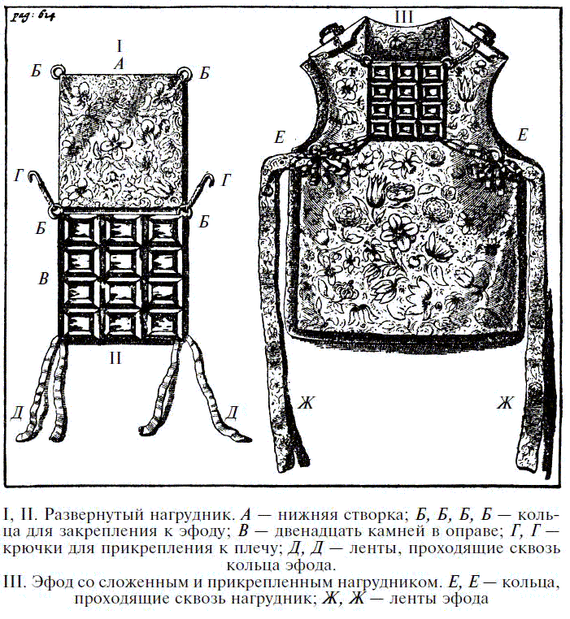
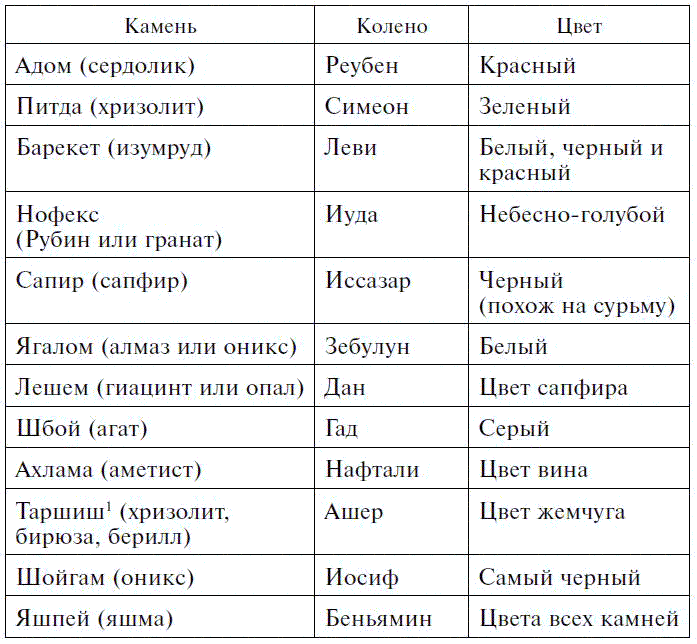
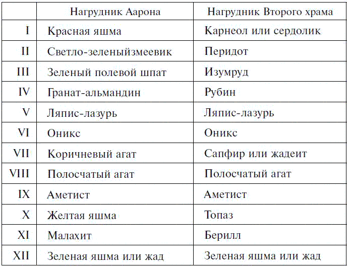
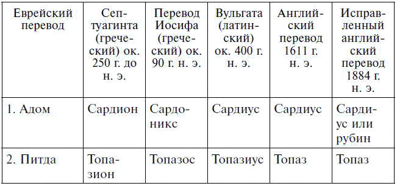
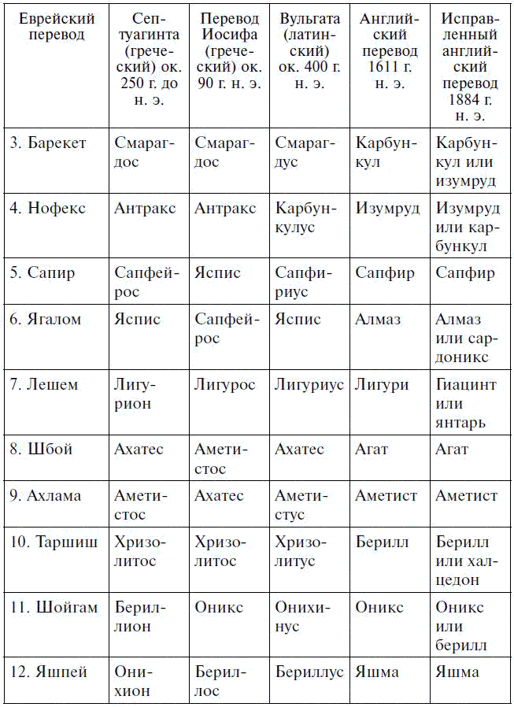
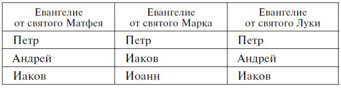
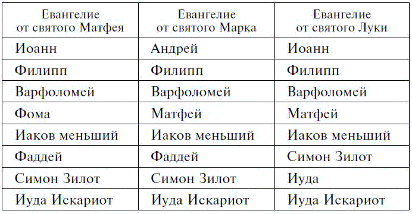

Первосвященники и драгоценные камни

Очень давно религиозные чувства людей привели к использованию драгоценных камней в качестве предметов поклонения. Для этих целей выбирались наиболее ценные и изящные предметы. Примеры подобного образа мыслей мы находим в описаниях нагрудников первосвященников и камней, пожертвованных в пустыне израильтянами для скинии,[111] приводимых в Книге Исхода. Связь подобных предметов с религией проявилась в использовании их как символов идей Божественной славы, отражена в видениях пророка Иезекииля и описаниях Нового Иерусалима в Апокалипсисе. Однако кроме «законного» применения самоцветы часто связываются со всевозможными религиозными фантазиями и суевериями, следы которых можно отыскать в Талмуде, Коране и тому подобных писаниях; они также приносились в дар различным языческим божествам. Даже в наши дни отголоски этих представлений заметны в религиозном ювелирном искусстве и религиозной символике.
В видении пророка Иезекииля и кратком упоминании о появлении Бога Израиля в Книге Исхода трон Иеговы или мозаичный пол под его ногами уподобляются сапфиру, а апостол Иоанн в Апокалипсисе описывает Великий белый трон, окруженный радугой, подобной изумруду.
Древнееврейские писания, вместо простого величия этих библейских сравнений, приводят много фантастичных представлений. Камни нагрудника считались священными подношениями двенадцати могущественным ангелам, охраняющим ворота рая, а о светящихся камнях шатра Авраама и Ноева ковчега рассказывали удивительные истории. По мусульманским легендам, различные небеса составлены из различных драгоценных камней. В Средние века эти религиозные представления переплелись с множеством астрологических, алхимических и медицинских суеверий.
В Книге Исхода приводится следующее описание нагрудника:
«И сделай нагрудник искусной работы; после изготовления торжественного одеяния сделай его; из золота, из голубого и из пурпурного, и из алого, и из двойного льна сделай его.
Квадратом его сделай двойным, сделай его длиной в пядь и шириною в пядь его сделай.
И вставь в него оправы камней, точно четыре ряда камней: первый ряд сделай из сардоникса, топаза и карбункула – таким сделай первый ряд.
И второй ряд сделай из изумруда, сапфира и алмаза.
И третий ряд из гиацинта, агата и аметиста.
И четвертый ряд из берилла, оникса и яшмы; они должны быть целиком оправлены в золото.
И камни должны быть с именами детей Израиля, двенадцатью, выгравированными как на печати: каждый камень с одним именем, и будут вместе они соответствовать двенадцати коленам.
И сделай для нагрудника цепи из чистого золота, на концах переплетенные искусно.
И сделай два кольца для нагрудника из золота и подкрепи их на двух углах нагрудника.
И два других конца двух переплетенных цепей закрепи двумя пряжками, и помести их на плечевую часть наплечника поверх его.
И сделай два кольца золотых, и помести их на двух углах нагрудника на кайме его, находящейся с внутренней стороны.
И два других золотых кольца сделай и помести их на двух сторонах наплечника внизу, на передней стороне его, поверх других соединений его, выше пояса искусной работы.
И они скрепят нагрудник, кольцо к кольцу, с наплечниками, со шнуром голубым, который будет выше пояса искусной работы и не даст нагруднику отделиться от наплечника (эфода).
И Аарон нанесет имена детей Израилевых на нагрудник, на его середину, когда войдет он в святилище для поминания перед Господом вечным.
И помести в нагрудник Урим и Тумим,[112] и они будут на сердце Аарона, когда он предстанет перед Господом: Аарон напишет приговор детям Израиля на своем сердце перед Господом вечным».
О чудесных свойствах камней, носимых первосвященниками, древнееврейский историк Иосиф Флавий (37 – после 100) пишет:
«От камней, которые носил первосвященник (это были сардониксы, и я считаю излишним описывать их природу, поскольку она известна всем), исходил свет, когда при жертвоприношении присутствовал Бог. Те камни, что носили на правом плече, а не на пряжке, излучали сияние, достаточное, чтобы освещать даже отдаленные предметы, хотя прежде они не обладали подобным блеском. И естественно, это само по себе вызывает удивление у всех тех, кто, не презирая религии, не позволяет увлечь себя ложной мудростью. Однако мне хочется рассказать нечто еще более удивительное, а именно что Бог провозглашал победу в битве с помощью двенадцати камней, носимых первосвященниками на груди в нагруднике. Пока армия еще не сдвинулась с места, от них исходило такое сияние, что все поняли: сам Бог помогает им. По этой причине греки, глубоко чтившие наши церемониалы, потому что не могли оспаривать их, называли нагрудник „логионом“, или оракулом. Однако нагрудник и ониксы перестали излучать это сияние за двести лет до того, как я это пишу, поскольку Бог был разгневан нарушением заповедей».
Флавий, должно быть видевший первосвященника в торжественном облачении, пишет, что нагрудник был украшен «двенадцатью камнями исключительного размера и красоты, которые не так-то легко приобрести по причине их огромной ценности». Однако эти камни были не просто редкими и дорогими; они также обладали удивительной чудодейственной силой. Примерно в 400 году н. э. святой Епифаний, епископ Констанцы, рассказывал о чудесном алмазе, который носил на груди первосвященник, облаченный в роскошные одеяния, выходивший к народу в Пасху, Троицу и праздник Кущей. Этот алмаз называли «делосисом», или «объявителем», поскольку своим внешним видом он сообщал людям судьбу, приготовленную им Богом. Если люди были грешны или непокорны, камень тускнел, что служило предвестием смерти от болезни, а если он принимал цвет крови, это означало гибель от меча. Если же камень сиял, как свежий снег, люди понимали, что они не грешны, и торопились устроить праздник.
Несомненно, что этот рассказ есть не более чем модификация рассказа Иосифа Флавия. Очевидно, «логион» (оракул) Иосифа превратился в «делосиса» (объявителя).
Рассказывают, когда Моисей решил написать на камнях нагрудника названия двенадцати колен Израиля, он обратился за помощью к чудодейственному веществу – «шамиру». Сначала названия были написаны чернилами, затем по ним прошлись «шамиром», и в результате надписи получились вырезанными на камнях.
В доказательство магического характера этой операции утверждают, что ни одна частица самоцветов не была сдвинута с места. Название «шамир» на самом деле означает «корунд».
Аргументом против использования особенно редких и дорогостоящих камней для украшения нагрудника служит его размер. Говорят, в сложенном виде он достигает пяди в каждую сторону, то есть и в длину и в ширину от восьми до девяти дюймов. В этом случае сами камни должны быть не меньше двух с половиной дюймов, а если учесть число букв, требующихся для написания названия некоторых колен, эти размеры не кажутся слишком большими. Совершенно невероятно, чтобы во времена Моисея существовали такие огромные рубины, изумруды или сапфиры. Нужно также учитывать, что гравировать очень твердые камни инструментами, которые были у древних евреев того времени, было чрезвычайно трудно. Однако есть веские причины полагать, что после вавилонского плена был изготовлен новый нагрудник, а уже в это время получить и обработать камни огромной ценности и высокой твердости, наверное, было легче. Необходимо также принимать во внимание, что в то время совершенству камня не придавалось такого значения, как богатству цвета.
В своем комментарии к Книге Исхода Корнелий а Лапид[113] (Корнелий ван ден Стеен) рассматривает вопрос об алмазе в нагруднике первосвященников. Прежде всего, он отмечает, что алмаз был очень дорогостоящим камнем, а для того, чтобы написать на нем имя Иуды или какого-нибудь другого колена, требовался достаточно большой камень. По сведениям Корнелия, в те времена камень нужного размера стоил сотни тысяч золотых крон, поэтому он спрашивает: «Где бедные евреи добыли такую сумму денег и где они нашли такой алмаз?»
Есть еще одна причина для сомнения в том, что на нагруднике был алмаз: это бы слишком подчеркивало различия между коленами, и колено, которому принадлежал алмаз, раздулось бы от гордости, а другие преисполнились бы ненависти и зависти, «потому что алмаз – это королева всех самоцветов».
Использование нагрудника для выявления виновности преступника засвидетельствовано в самаритянском переводе книги Иисуса, обнаруженной доктором Мозесом Гастером, главным раввином испанских и португальских евреев в Англии. Там рассказывается, что некий Ахан украл золотое изображение из языческого храма в Иерихоне. Его вину доказали с помощью нагрудника первосвященника, потому что, когда произнесли его имя, камни потеряли свою окраску и потускнели.

Много догадок строилось относительно происхождения нагрудника с таинственными Уримом и Тумимом на нем. Вполне вероятно, недалеко время, когда будут определены его египетские корни. Нагрудное украшение верховного жреца Мемфиса, изображенного на египетском барельефе, состоит из двенадцати маленьких шариков или крестиков, предназначенных для нанесения на них египетских иероглифов. Поскольку определить, из какого материала сделаны эти шарики или крестики, невозможно, единственной определенной связью с древнееврейским украшением служит число фигур; оно намекает на общее происхождение, но не доказывает его. Памятники показывают, что верховные жрецы Мемфиса носили это украшение во времена IV династии, то есть примерно в 4000 году до н. э.
Говоря об Уриме и Тумиме, таинственных оракулах древних евреев, святой Августин (354–450), признавая, как трудно истолковать значение слов и характер оракула, добавляет о существовании мнения, что этими словами назван камень, который менял окраску в зависимости от благоприятного или неблагоприятного ответа при входе жреца в святилище; и все же, полагает он, возможно, на нагруднике просто были написаны начальные буквы слов «Урим» и «Тумим».
После захвата Иерусалима Титом в 70 году н. э. сокровища храма были перевезены в Рим, и Иосиф Флавий сообщает, что нагрудник хранился в храме Согласия, воздвигнутом Веспасианом.[114] Здесь он, если верить Флавию, находился во время разграбления Рима вандалами под началом Генсерика, в 455 году, хотя преподобный К.У. Кинг полагает вполне вероятным, что Аларих, король вестготов, одержав победу над римлянами в 410 году н. э., хранил это сокровище в надежном месте. Однако недвусмысленное заявление Прокопия,[115] будто «еврейские сосуды» были пронесены по улицам Константинополя по случаю победы Велизария[116] над вандалами в 534 году, можно считать подтверждением догадки, что вандалы завладели нагрудником и его драгоценностями.
Однако следует заметить, что Прокопий нигде не упоминает о нагруднике, и еще вопрос, был ли он в числе «еврейских сосудов». Известно лишь одно, что часть трофеев Велизария, пронесенная по улицам Константинополя, Юстиниан (483–565) передал в ризницу церкви Святой Софии. Однако говорят, некоторое время спустя император услышал от некоего еврея, что пока сокровища, находящиеся в храме, не перевезут в Иерусалим, они будут приносить тому месту, где хранятся, одни несчастья. Если эта история правдива, Юстиниан, наверное, чувствовал, что судьба Рима является для него уроком и что Константинополь необходимо спасти от подобной беды. Движимый этими соображениями, он отослал «священные сосуды» в Иерусалим, где они были помещены в церковь Гроба Господня.
В связи с этим вспоминаются два события, которые вполне могут быть связаны с двенадцатью мистическими камнями, а именно пленение и разграбление Иерусалима персидским шахом из династии Сасанидов Хосровом II в 615 году и разгром империи Сасанидов арабами-мусульманами, а также пленение и разграбление столицы Сасанидов Ктесифона[117] в 637 году. Если допустить, что Хосров увез в Персию священные реликвии храма, можно не сомневаться, что арабские завоеватели захватили их в качестве трофеев. Правда, Кинг, старавшийся тщательно проследить историю драгоценных камней нагрудника после падения Иерусалима в 70 году н. э., высказывает предположение, что они до сих пор могут быть «спрятаны в какой-нибудь неизвестной сокровищнице одной из древних персидских столиц».
Те, кто строит догадки относительно судьбы камней нагрудника, обычно оставляют без внимания один факт. В состав сил, которые вместе с персиянами из династии Сасанидов взяли Иерусалим, входил большой отряд евреев численностью в двадцать шесть тысяч человек, и они могли претендовать на один из «еврейских сосудов» или драгоценности, захваченные завоевателями. Но даже в таком случае вполне вероятно, что эти драгоценные предметы попали в руки мусульман, пленивших Иерусалим в том же году, в котором они взяли Ктесифон.
Попавшие в руки римлян самоцветы могли сохраниться в первоначальном виде благодаря выгравированным на них названиям колен Израилевых. Вероятно, надписи были сделаны самым древним еврейским шрифтом, которым чеканили монеты еще во время последнего восстания, в 137 году н. э. Следовательно, для использования камней в качестве украшений их требовалось заново отшлифовать, а это процесс нелегкий, да и камень при этом значительно теряет в размерах. Не следует также забывать, что подлинная ценность тех драгоценных камней была не так велика, как многие думают, потому что все они, вероятно, были не самого лучшего качества. Очень возможно, восторженное описание их Иосифом Флавием было продиктовано национальной гордостью или тенденцией к преувеличению, столь распространенной среди восточных авторов. Разумеется, если нагрудник, о котором говорит Иосиф Флавий, был изготовлен вскоре после возвращения евреев из вавилонского плена, их финансовые возможности в то время были довольно ограниченны.
Если допустить возможность того, что арабы могли завладеть нагрудником, как они к нему относились? Герои Ветхого Завета, особенно Моисей, были в глазах мусульман такими священными личностями, что эта реликвия была для них так же драгоценна, как и для нас. Однако арабы, победившие империю Сасанидов, хоть и одержимые религиозным пылом, не слишком разбирались в археологии и не смогли бы расшифровать странные буквы, выгравированные на камнях. Скорее всего, они считали их персидскими буквами и поэтому ценили эти камни не выше всех остальных персидских ценностей. Это может служить объяснением того факта, что в работах таких мусульманских авторов, как Табари,[118] рассказавший о гибели империи Сасанидов, ни разу не упоминается о нагруднике с украшениями. Можно с уверенностью сказать, что сами персы не питали глубокого почтения к святыням иудейской религии, поскольку их собственная зороастрийская вера не имела к ним никакого отношения.
В 628 году, незадолго до вторжения арабов, после заключения мирного договора между Византийской и Сасанидской империями Кобад II, сын Хосрова II, передал греческому императору Гераклию самую драгоценную христианскую реликвию – крест, обнаруженный Еленой, матерью Константина Великого, и считавшийся тем самым крестом, на котором распяли Христа. Этот крест был одним из священных предметов, увезенных Хосровом в 615 году из Иерусалима в Персию. Говорят, его тщательно охраняли благодаря Сире, жене Хосрова, христианке. Существует минимальная возможность того, что одновременно персами могли быть захвачены и вывезены из Иерусалима и другие предметы религиозного культа и что уникальность самой важной реликвии настолько перевешивала все остальное, что историки оставили этот факт без внимания. В 629 году Гераклий возвратил крест в Иерусалим, но он попал в руки мусульман, когда в 637 году арабы под командованием Омара захватили город. Поэтому, если Кобад отдал и нагрудник, украшенный драгоценностями, он, вероятно, разделил ту же судьбу.
Тут предоставляется широкое поле для догадок, но, к сожалению, больше ничего. И все же при отсутствии какой-либо определенной и надежной информации о драгоценных камнях нагрудника, камнях, с точки зрения историка, наиболее таинственных и ценных, этот вопрос вызывает и некий романтический интерес. Особенно этот интерес оправдан для тех, кто склонен оценивать драгоценные камни по их символическому значению, потому что, как мы видели, это значение коренится в благоговении ранних христианских авторов, начиная с автора Апокалипсиса, перед незабвенными камнями, носимыми первосвященником. Это относится к камням рождения, а также основным драгоценным и полудрагоценным камням, чей цвет и характер символизирует качества сердца и души.
Довольно остроумное применение могущества нагрудника Аарона описано в книге, напечатанной в Портленде, штат Мэн. Автор допускает, что таинственные Урим и Тумим, спрятанные в складках нагрудника, являлись дубликатами камней, на которых выгравированы названия колен. Они расположены так, что, если встряхнуть нагрудник, три из них покажутся в отверстиях эфода под рядами вставленных в нагрудник камней. Смысл предсказания определялся по сочетаниям цветов этих трех камней; каждому сочетанию соответствовало определенное значение. Едва ли стоит опровергать, что могло быть верным относительно первоначального значения Урима и Тумима, но с точки зрения современного опыта это ловкая манипуляция, вероятно пользовавшаяся некоторой популярностью.
Для тех, кто, подобно покойному лейтенанту Тоттену, видит в коленах Манассея и Эфраима англосаксов Англии и Соединенных Штатов и что король Георг V сидит на троне Давида, символические камни нагрудника получают дополнительное значение. Не претендуя на способность следовать за всеми запутанными и, безусловно, самыми изощренными размышлениями относительно этой школы толкования Библии, нельзя не выразить некоторого удивления по поводу того, что Эфраим считался представителем Англии, а Манассей – Соединенных Штатов, а не наоборот. В Книге Бытия, в тексте, особенно часто упоминаемом в этих размышлениях, Иаков благословляет Эфраима, несмотря на протест Иосифа, что благословить надо его старшего сына Манассея. Иаков на его протест отвечает: «Я знаю, сын мой, я знаю; он (Манассей) также получит народ, и он также будет великим, но его младший брат будет более великим, и его семя станет множеством наций». Разумеется, очень сложное население Соединенных Штатов полностью подходит под это описание. Как правило, евреи, используя для обозначения колен имена Эфраима и Манассея, сохранили разделение народа на двенадцать частей, заменив эти колена на колено Иосифа и вычеркнув из списка имя Леви, так как колено Леви считалось коленом жрецов, охраняющих святилище, и не участвовало в разделе Земли обетованной.
В «Мидраш Бемидбар», древнееврейском комментарии к Книге Чисел, колена перечисляются по порядку с камнем, соответствующим каждому из них и цвету знамени, воздвигаемому над шатром в пустыне. Этот список основывается на предании, уходящем корнями по крайней мере в XII в., а возможно, и в более ранний период; поэтому его нельзя оставить без внимания, хотя безоговорочно принять его мы тоже не можем.[119]

Пытаясь идентифицировать камни, перечисленные в Книге Исхода как камни, украшавшие нагрудник первосвященников, следует помнить, что этот «нагрудник Аарона» и тот, что описан Иосифом Флавием и привезен Титом в Рим после захвата Иерусалима в 70 году н. э., по всей вероятности, совершенно разные предметы. Первый, если он вообще когда-либо существовал, – может быть, только в воображении авторов Кодекса жрецов, – должен был содержать камни, известные египтянам и используемые ими в XIII или XIV веке до н. э. Некоторые из них, вероятно, были вставлены в «драгоценности из золота и драгоценности из серебра», заимствованные израильтянами у египтян незадолго перед Исходом; с другой стороны, наиболее достоверные упоминания о камнях нагрудника из Второго храма, сделанного, вероятно, в V веке до н. э., следует искать в древних греческих и латинских версиях Ветхого Завета и в трактате Теофраста о драгоценных камнях, написанном примерно в 300 году до н. э.
Здесь может пригодиться «Естественная история» Плиния Старшего, эта великая сокровищница древних знаний, а также работы других древних авторов.[120]
АДОМЭтимология этого слова ясно указывает на то, что речь идет о красном камне, по всей вероятности карнеоле. Известно, что в Древнем Египте иероглифические тексты из Книги мертвых гравировали на амулетах, сделанных из этого камня, и он также использовался для изготовления древних вавилонских цилиндров. Прекрасные экземпляры карнеола привозились из Аравии. Греческая Септуагинта,[121] латинская Вульгата,[122] Иосиф Флавий в «Иудейской войне» и Епифаний – все переводят это слово как «сардиус», древнее название карнеола; однако Иосиф Флавий в своих «Иудейских древностях» переводит «адом» как «сардоникс». Египетское слово «хенем» использовалось для обозначения красных камней и, кажется, применялось как к карнеолу, так и к красной яшме, и к красному полевому шпату. Поэтому, вероятно, во времена Моисея слово «адом» означало красную яшму, тогда как для V века до н. э. лучшим переводом было бы «карнеол». Это современное название сардиуса, означающее «яркий камень», впервые появляется в латинском переводе трактата Луки бен Коста, писавшего в Х веке н. э. Говорят, на камне адом, занимавшем в нагруднике первое место, было написано имя Реубена.
ПИТДАНе приходится сомневаться, что это «топазиус» древних авторов, который обычно означал наш хризолит или перидот, но не топаз; ведь Плиний и его последователи описывают «топазиус» как камень зеленоватого цвета. Легенда, рассказанная Плинием, местом его происхождения называет остров в Красном море под названием Топазос. Название происходит от «топазейн» – «предполагать», потому что остров было трудно найти. Однако еврейское слово «питда», вероятно, происходит от санскритского «пита» – «желтый», и, следовательно, камень мог быть желтого цвета, возможно, наш топаз. У. М. Флиндерс Питри,[123] вероятно находясь под влиянием этой санскритской этимологии, видит в нем желтый змеевик, применявшийся в Древнем Египте. Если все же признать, что светло-зеленый камень занимает второе место в нагруднике времен Моисея, то это, вероятно, светло-зеленый змеевик. На египетском языке он назывался «ме», и его нередко использовали в качестве амулета. В более позднем нагруднике, наверное, был перидот. На этом втором камне было выгравировано имя Симеон.
БАРЕКЕТСептуагинта, Иосиф и Вульгата в один голос переводят это название как «смарагдус», а так как нам известно, что месторождения изумруда разрабатывались в Египте, в горе Забаре, Нубия,[124] до начала нашей эры и что изумруд был известен и использовался в Египте, у нас нет никаких причин отвергать привычный перевод – «изумруд». И все же следует признать, что «смарагдус» часто означал другие зеленые камни. Майерс и Питри предположили, что отрывок из Апокалипсиса, где радуга сравнивается со «смарагдусом», показывает, что автор так называет горный хрусталь; но это предположение вряд ли верно, потому что в нем смешиваются призматические эффекты света, проходящего через кристалл, с самим кристаллом. Вне всякого сомнения, радуге могли бы уподобить яркий камень, такой как изумруд, а не бесцветный, вроде горного хрусталя. Был ли уже в нагруднике времен Моисея изумруд – это другой вопрос, и кажется гораздо более правдоподобным, что третьим камнем нагрудника был зеленый полевой шпат, свободно используемый в Древнем Египте в качестве амулета и известный под названием «уат». В каноническом переводе Библии[125] карбункул назван третьим, а не четвертым камнем в нагруднике. На барекете было выгравировано название колена Леви.
НОФЕКССептуагинта и Иосиф переводят это название как «антракс», а Вульгата как «карбункул». Это название, буквально означающее «горящий уголь», использовалось для некоторых камней, славящихся своим необычным сверкающим красным цветом, таких как, например, рубин и самые красивые разновидности граната. Хотя вполне возможно, что Иосиф мог видеть восточный рубин на нагруднике, это почти наверняка не мог быть оригинальный нагрудник времен Моисея, поскольку нет ни одного доказательства того, что этот камень был известен в Древнем Египте. Поэтому мы склонны полагать, что в XIII веке до н. э. название «нофекс» означало альмандин или какую-нибудь подобную разновидность этого камня. В каноническом переводе Библии «изумруд» стоит на четвертом месте, а не на третьем. На этом четвертом камне нагрудника было выгравировано название колена Иуды.
САПИРВо всех древних версиях это слово переводится как «сапфирус».[126] Этот камень не мог быть сапфиром в нашем понимании, потому что и Теофраст, и Плиний описывают «сапфирус» как камень с золотистыми пятнами, что, скорее всего, указывает на ляпис-лазурь, в которой часто встречаются отливающие золотистым цветом частички пирита. Этот камень египтяне называли «хесбет» и высоко его ценили. В списках дани, которую платили египтяне, и в списках подарков, посылаемых Вавилоном египетским монархам, важное место отводилось ляпис-лазури, добываемой в старейших месторождениях мира, разрабатывавшихся еще в 4000 году до н. э. и разрабатывающихся до сих пор. Из этого материала делались амулеты и фигурки, многие из которых сохранились до наших дней. Говорят, египетский верховный жрец носил на шее изображение Мат, богини истины, сделанное из ляпис-лазури. Название состоит из латинского «ляпис» – камень, и «ладжувард» – название камня на персидском языке. Из последнего слова образовалась наша «лазурь». В старину ляпис-лазурь была главным синим камнем благодаря красивому цвету и тому, что она являлась ценным сырьем для получения ультра-мариновой краски. Хотя Плиний пишет, что камень был слишком мягок для гравировки, это не мешало украсить им нагрудник, потому что камни, вставленные в него, не были предназначены для использования в качестве печатей и, следовательно, не подвергались никакому износу. В этой связи, однако, несколько странно, что еврейское слово «сапир» означает камень, особенно пригодный для вырезания всяческих надписей. Ляпис-лазурь пользовалась огромным почтением в Древнем Египте, и из нее столь же часто делали украшения во времена Греции и Рима, поэтому, вероятно, ею был украшен не только нагрудник Аарона, но и нагрудники более позднего времени. На этом пятом камне было вырезано название колена Иссазар.
ЯГАЛОМШестой камень и у Септуагинты, и у Иосифа – «яспис», вероятно, зеленая яшма или нефрит, и это наводит на мысль о том, что в оригинальном древнееврейском тексте шестым камнем был «яшпей», а не «ягалом». Двенадцатый камень в греческом переводе – «ониксион», или «оникс», и это кажется вполне эквивалентной заменой слова «ягалом». Однако в некоторых древнееврейских источниках «ягалом» считается алмазом, и Лютер в своей немецкой версии Библии и канонический перевод Библии это слово переводят именно так. Эта трактовка основана на происхождении слова «ягалом» от глагола, означающего «разрушать». Таким образом, название камня означает «разрушитель». Это совершенно уместно для алмаза, который благодаря своей необычной твердости способен резать или «разрушать», все остальные камни. Однако с этой целью, скорее всего, использовался наждак или корундовая игла – «шамир», упоминавшаяся у Захарии. Алмаз для этих целей, безусловно, в старину не использовался, хотя, возможно, его употребляли для гравировки в V веке до н. э. Эти соображения заставляют предпочесть традиционную интерпретацию слова «ягалом» и перевести его как «оникс». В этом случае «разрушитель» мог означать использование гравированного оникса для печатей, когда гравированной фигуркой или буквой ударяли по какому-нибудь мягкому материалу, оставляя на нем отпечаток. На ягаломе было написано название колена Зебулун.
ЛЕШЕМНи один камень нагрудника так трудно не поддается определению, как этот. Септуагинта, Иосиф и Вульгата – все переводят это название словом «лигуриус», иногда обозначавшим янтарь, вещество совершенно не пригодное для использования в нагруднике среди других гравированных камней. Вероятно, первоначальное название «лигуриус» обозначало янтарь, и это легко объясняемо тем, что янтарь, добывавшийся на Балтике, поступал в северную провинцию Италии Лигурию, откуда расходился в разные страны. Однако греки называли янтарь «электроном», а «лигурионом» они, похоже, называли разновидность гиацинта, несколько напоминающую янтарь по цвету, а затем и другие разновидности этого камня. Очевидно, первоначальное название «лигурион» позже преобразовалось в «линкурион», а затем стало расшифровываться как «моча рыси» («линкс» – рысь и «ойрон» – моча). Эта причудливая этимология породила легенду о том, что «лигуриос», или, скорее, «линкуриос», был затвердевшей мочой рыси. Термин «линкурион», как его использует Теофраст, мог означать как сапфир, так и гиацинт, так как он особо подчеркивает холодность этого камня, качество, характерное как для сапфира, так и для еще более густого гиацинта. Поэтому, похоже, даже название «лигуриус» оправдывает принятие перевода этого слова как «гиацинтус», подсказанный списком камней в Апокалипсисе и предложенный Епифанием, епископом Констанцы, примерно в 400 году н. э. Следует ли переводить «гиацинтус» как «сапфир» или «гиацинт», определить нелегко, поскольку это название, похоже, использовалось для обоих камней; а у арабов в форме «якут» он стал родовым термином для всех разновидностей корунда. Сапфиры гравировались во времена греков и римлян, и, вероятно, это и есть камень «лешем» из нагрудника времен Второго храма. Для нагрудника времен Моисея нужно искать камень, известный в Древнем Египте, где сапфир, похоже, еще не был известен. Если согласиться с предположением Бругша,[127] что египетский «нешем», имевший репутацию камня с чудесными магическими свойствами, был тем же самым, что еврейский «лешем», коричневый агат будет седьмым камнем в первом нагруднике, чему Вендел дает очень веские обоснования, переводя «лешем» словом «нешем». Цветовые обозначения египтянами применялись очень свободно, так что седьмым камнем нагрудника Аарона вполне мог быть красноватый или желтоватый агат. На лешеме было выгравировано название колена Иосифа.
ШБОЙЭто слово и у древних авторов, и у Иосифа переводится как «агат», сложный камень, высоко ценимый в глубокой древности. Поэтому камень занимает достойное место среди камней нагрудника; в более поздний период, как отмечает Плиний, его стали ценить гораздо меньше. Как бы то ни было, многие талисманные и целебные свойства, приписываемые агату, огромное разнообразие окраски этих камней и любопытные рисунки на многих из них делали их излюбленным материалом для различных изделий. Этимология слова «шбой» намекает на то, что оно означало полосчатый агат. Вероятнее всего, в первом нагруднике был камень с серыми и белыми полосками, поскольку эта разновидность часто встречается в египетских изделиях. Нет необходимости искать некое сходство между этим камнем и красноватым или желтовато-коричневым агатом однородной окраски, который мог занимать в нагруднике седьмое место. На этом камне было выгравировано название колена Беньямина.
АХЛАМАЧто касается этого камня, все авторитетные источники единодушно переводят «ахлама» как «аметист». Это был, однако, не восточный аметист, разновидность корунда, а темно-синяя или пурпурная разновидность кварца, настоящий аметист, добывавшийся в Аравии и Сирии. Древнееврейское название показывает, что этот камень считался обладающим свойством внушать сны и видения (halom – халом – сон), в то время как, хорошо известно, греческое название характеризует его как камень, охраняющий от пьянства и предупреждающий опьянение. Аметист был известен в Древнем Египте и, вероятно, назывался «хемаг». В Книге мертвых упоминается о сердце, сделанном из «хемага», и два таких сердцеобразных амулета из аметиста хранятся в музее «Булак». Поскольку во времена Греции и Рима аметист сохранял репутацию камня, обладающего красотой и силой, можно смело утверждать, что он был вправлен и в первый, и во второй нагрудник. На ахлама было выгравировано название колена Дан.
ТАРШИШИ Септуагинта, и Иосиф переводят это слово, написанное на нагруднике, как «хризолит». В каноническом переводе Библии приводится перевод «берилл». Уже говорилось, что топаз у древних был обычно нашим хризолитом, или перидотом, а название «хризолит» использовалось для обозначения нашего топаза. Об этом говорит буквальное значение слова – «золотистый камень». Таршиш получил свое название от Тартесса в Испании, важного торгового пункта финикийцев. Камень, доставлявшийся оттуда, не был, конечно, нашим восточным топазом, разновидностью корунда, он вообще не был топазом. Вообще маловероятно, что название «таршиш», хотя бы первоначально, означало подлинный топаз; скорее всего, оно означало разновидность кварца, встречающуюся в Испании. Это минерал черного цвета, но после нагревания приобретает ярко-коричневую окраску, а если нагревание продолжить, камень начинает бледнеть и в конце концов становится совершенно прозрачным. Древние знали это свойство. В древнеегипетских записях камень под названием «тсехен» часто упоминается как материал, из которого делались амулеты. Это египетское название первоначально означало «желтый камень» и, наверное, указывало или на топаз, или на желтую яшму, известную и использовавшуюся в Египте с глубокой древности; топаз, вероятно, стал известен позже 500 или 600 года до н. э. Поэтому попытки найти географическую связь слова «таршиш» с испанским источником могут ограничить нас испанским происхождением этого камня. Наиболее вероятным переводом названия десятого камня в нагруднике следует считать «желтая яшма». Если же учесть религиозное рвение тех, кто трудился для возобновления славы древнего Иерусалима, вероятно, это был топаз, возможно, экземпляр подлинного желтого топаза, привезенного из Испании. Ведь какими бы качествами ни обладал желтый камень, привезенный из Тартесса, название вполне могло применяться к подлинному топазу, когда этот камень стал известен евреям, или в Вавилоне, или после возвращения в Палестину. На таршише было выгравировано название колена Нафтали.
ШОЙГАМСептуагинта переводит это название как «берилл», но в каноническом переводе Библии и в так называемой дуэайской версии (перевод Библии на английский язык для католиков) оно неизменно переводится как «оникс». Диодор Сицилийский,[128] писавший в I веке до н. э., и Дионисий Периегет[129] являются первыми классическими авторами, упомянувшими название «берилл». Хотя этого названия нет в трактате Теофраста, он, очевидно, включил берилл в число «смарагдов»; настоящий изумруд является просто разновидностью берилла, а своей красивой окраской обязан легкой примеси хрома. Самые красивые бериллы привозились из Индии. Кроме экземпляра, вставленного в нагрудник, первосвященник носил на плечах два камня шойгам с выгравированными на них названиями шести племен. Тщательно взвесив доказательства, можно считать, что камни, носимые первосвященниками Второго храма, были аквамаринами (бериллами). Мы не имеем никакой сколько-нибудь достоверной информации, чем же были камни шойгам, использовавшиеся во времена Моисея; в целом предположение Д.Л. Майерса, что это были малахиты, кажется вполне приемлемым, потому что древние египтяне знали этот материал и, похоже, часто использовали в качестве амулетов. Малахит, как и другие зеленые камни, назывался у египтян «мафек», и кольцо с «мафеком» упоминается в одном египетском тексте; несомненно, в более поздний период египетской истории «мафек» мог также означать берилл. Если учесть, что бирюза, добывающаяся в рудниках Синайского полуострова, заново открытых Макдональдом, была, безусловно, известна египтянам еще в глубокой древности, само собой напрашивается предположение, что камни шойгам были бирюзой. Светло-голубые или голубовато-зеленые экземпляры этого камня, найденного на горе Синай, более ярко контрастировали бы с находящимся по соседству нефритом, чем ярко-зеленый малахит. На камне шойгам с нагрудника было выгравировано название колена Гад.
ЯШПЕЙЕсли это название занимает шестое место в оригинальном древнееврейском тексте, все старинные версии дружно переводят его как «яшма». Ассирийский вариант названия был «яшпу», что видно из клинописи Тель-эль-Амарны, датируемой периодом, предшествующим исходу евреев из вавилонского плена. Из так называемых яшм ни одна не ценилась так высоко, как зеленая. Древние авторы отмечали талисманные и целебные свойства зеленой яшмы, и, если верить Галену,[130] египетские врачи часто рекомендовали эти камни как лекарства. Абель Ремюзе, крупный французский востоковед, писавший в 1820 году, одним из первых предположил, что еврейский «яшпей» и зеленая яшма греков и римлян на самом деле жад (нефрит или жадеит), китайский камень «ю». Оба эти минерала использовались как в Старом, так и в Новом Свете, и везде считалось, будто они обладают замечательными свойствами. Очень возможно, качества, якобы характеризующие жад, позже приписывали зеленой яшме, но есть все основания полагать, что настоящий жад всегда ценился выше, чем заменяющая его яшма, так как встречается гораздо более редко и легко отличается от яшмы того же цвета своей полупрозрачностью. До недавнего времени жад добывали лишь в Туркестане, Бирме и Новой Зеландии, и большая часть камней, используемых в других странах, или сохранилась с доисторических времен, или добыта из неизвестных ныне источников. Кажется вполне вероятным, что яшпей, украшавший нагрудник Аарона, был куском нефрита или жадеита; возможно, в более поздних нагрудниках использовалась зеленая яшма. На этом камне было выгравировано название колена Ашер.
Составляя следующий список драгоценных и полудрагоценных камней, украшавших ранние и поздние нагрудники, автор не претендует на окончательное решение проблемы, созданной древнееврейскими описаниями облачения первосвященника, но надеется, что представленные здесь различия между нагрудником времен Моисея и нагрудником Второго храма, разделяемых друг от другого восемью веками, могут пролить свет на некоторые неясности, с которыми приходится встречаться при изучении этого вопроса.

Следующий список показывает варианты переводов названий камней нагрудника в текстах Библии:


Нагрудник первосвященника, описанный в древнееврейском предании, особенно почитался евреями, а камни, вставленные в него, считались символическими. Поэтому вполне естественно, что эти камни описаны в Апокалипсисе как заложенные в фундамент Нового Иерусалима. Названия их во многих случаях не совпадают с названиями, приводимыми в Книге Исхода, но причиной этого могут быть различные переводы древнееврейских названий в арамейских или греческих версиях.
Вот что говорится в Апокалипсисе:
«И пришел ко мне один из семи ангелов, имевший семь сосудов, наполненных бедствиями, и, обращаясь ко мне, сказал: „Неси сюда, я покажу тебе новобрачную, жену Агнца“.
И он унес мой дух к большой высокой горе и показал мне Великий город, святой Иерусалим, спустившийся с небес от Бога, имеющий славу Господа, и свет ее подобен камню самому драгоценному, подобен даже яшме – камню ясному, как хрусталь.
И имел стену большую и высокую и имел 12 ворот и у ворот двенадцать ангелов, и имена, написанные на воротах, были именами двенадцати колен детей Израиля.
На востоке трое ворот, на севере трое ворот, на юге трое ворот и на западе трое ворот.
И стена города имела двенадцать фундаментов и в них имена двенадцати апостолов Агнца.
И он разговаривал со мной, имея золотую мерку для измерения города и ворот и стен его.
И город был четырехугольным, и длина его была такая же, как ширина. И он измерил город мерой, и был город двенадцати тысяч ферлонгов.[131] Длина, ширина и высота его были равными.
И он измерил стену, и была она сорок четыре локтя, согласно мерке и человека и ангела.
И построена стена была из яшмы, а город был из чистого золота, подобного ясному зеркалу.
И основания стены были выложены всевозможными драгоценными камнями: первое основание было яшмовым, второе из сапфира, третье из халцедона, четвертое изумрудное, пятое из сардоникса, шестое из сарда, седьмое из хризолита, восьмое из берилла, девятое из топаза, десятое из хризопраза, одиннадцатое из гиацинта, двенадцатое из аметиста.
И двенадцать ворот были из двенадцати жемчужин, каждые отдельные ворота были из одной жемчужины; и улицы города были из чистого золота, были они как бы из прозрачного стекла».
В этом описании легко проследить замену двенадцати апостолов на двенадцать колен в связи с перечисленными самоцветами, а кроме того, известны двенадцать ангелов, позднее ассоциирующихся с месяцами и знаками зодиака.
О двенадцати камнях фундамента святой Иоанн недвусмысленно утверждает в Апокалипсисе, что они имели «на себе имена двенадцати апостолов Агнца». Приписывание каждого камня определенному апостолу было сделано позже в соответствии с порядком, приведенным в списках апостолов, содержащихся в так называемых сводных Евангелиях, от Матфея, Марка и Луки. Эти списки не совсем идентичны – Андрею, например, у Матфея и Луки отведено второе место, а у Марка четвертое, и данному апостолу не всегда соответствует один и тот же камень. Зачастую к списку добавлялся апостол Павел, на самом деле тринадцатый апостол. В таком случае ему обычно отводилось второе место сразу за святым Петром, а братьям Иакову и Иоанну, «сыновьям грома», приписывался один и тот же камень. В некоторых более поздних классификациях святой Павел занимает последнее место, после святого Матфея, который занял место Иуды Искариота, чье имя как апостола впервые появляется в Деяниях апостолов.
СПИСОК АПОСТОЛОВ


Пассаж из Апокалипсиса не единственный в этой книге, где речь идет о драгоценных камнях. В главе IV написано:
«И сразу я стал духом, и узрел трон на небесах и Единого, сидящего на троне.
И Он, сидящий, был подобен яшме и сардониксу, и была вокруг трона радуга, подобная изумруду».
Комментаторы, и древние и современные, приводят многочисленные объяснения символического смысла упомянутого здесь сравнения. Некоторые видели в обоих камнях тип двух представлений о мире, огне и воде; другие находят, что они означают святость Бога и его милосердие. О радуге, похожей на ту, что «играет в изумруде», Олфорд[132] говорит, что нам не должно казаться странным, что дуга зеленая, а не разноцветная: «Форма дуги означает поклонение, а цвет более непосредственно символизирует доброту и милосердие».
Значение двенадцати камней из Апокалипсиса Рабан Мавр, архиепископ Майнца (786–856), определяет следующими словами:
«Яшмой изображаются истина и вера; сапфиром – высота небесной надежды; халцедоном – пламя внутреннего милосердия. В изумруде выражается сила веры, не ослабевающей в несчастьях; в сардониксе – покорность святых, несмотря на их достоинства; в сарде – священная кровь великомучеников. В хризолите выражена истинность духовных наставлений, сопровождаемых чудесами; в берилле – совершенное пророчество; в топазе – страстное ожидание пророчеств. Наконец, в хризопразе показаны дела святых мучеников и их награда; в гиацинте – небесный экстаз познания в их высоких мыслях и их смиренное снисхождение к человеческим слабостям; в аметисте – постоянное размышление смиренных душ о Небесном царстве».
Происхождение камней фундамента, названных в Апокалипсисе, можно найти в тексте Исайи, где он говорит:
«О ты, огорченный, брошенный в бурю и неутешный, взгляни: я кладу твои камни огненных цветов, я кладу твой фундамент из сапфиров.
И я сделаю твои окна из агатов, и твои ворота из карбункулов, и все твои ограды из приятных глазу камней».
Как видно, только три камня упоминаются по названию: сапфир, карбункул и «агаты». Этот последний перевод довольно сомнителен, потому что древнееврейское слово kodkodim означает «сияющие» или «пылающие» камни, а их использование для окон говорит о том, что они, наверное, были прозрачными. Легко понять, что в более поздние времена картина, данная в виде общих терминов, «камни огненных цветов» и «приятные глазу камни», расширилась и дополнилась употреблением названий двенадцати камней нагрудника с именами двенадцати колен народа Израиля.
Комментируя этот текст, раввин Иоханан ссылается на вавилонский Талмуд, в котором говорится, что Бог принесет драгоценности и жемчуг размером в тридцать квадратных локтей (двадцать локтей в высоту и десять в ширину) и сделает из них ворота Иерусалима. Это напоминает камни фундамента из Апокалипсиса. Скептически настроенный ученик сказал раввину: «Нам никогда не найти жемчужину величиной даже с голубиное яйцо». Но вскоре, плывя в лодке по морю, этот же самый ученик увидел ангелов, распиливающих камни столь же огромные, как и те, что описал раввин Иоханан, а когда он спросил, для чего они предназначены, ангелы ответили: «Единый, да будет Он благословен, сделает из них ворота Иерусалима».